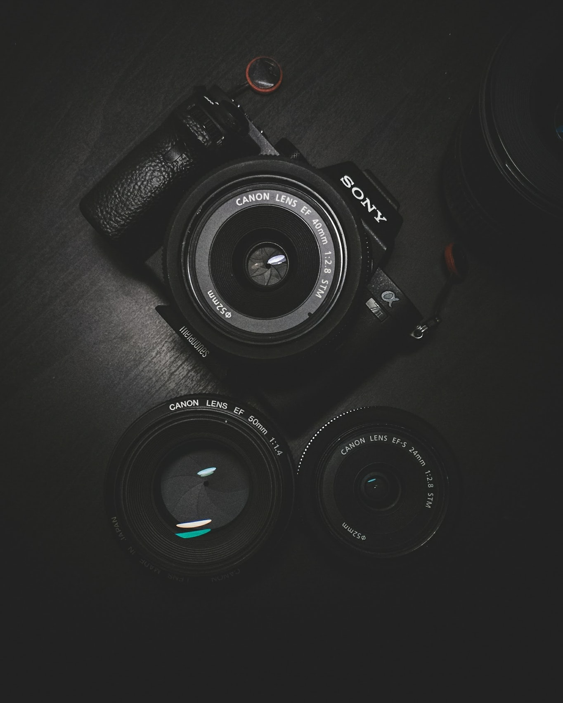

Love Photography?
Whether you are a novice in need of guidance, an experienced amateur in need of inspiration and ideas, or a professional photographer looking to brush up on your digital camera skills, we've got you covered. We have what you'll need to help you advance your photography. You can also take a look of other artists' work in our Gallery
Here is a little speech that you can listen name "You must create" to inspire photographers